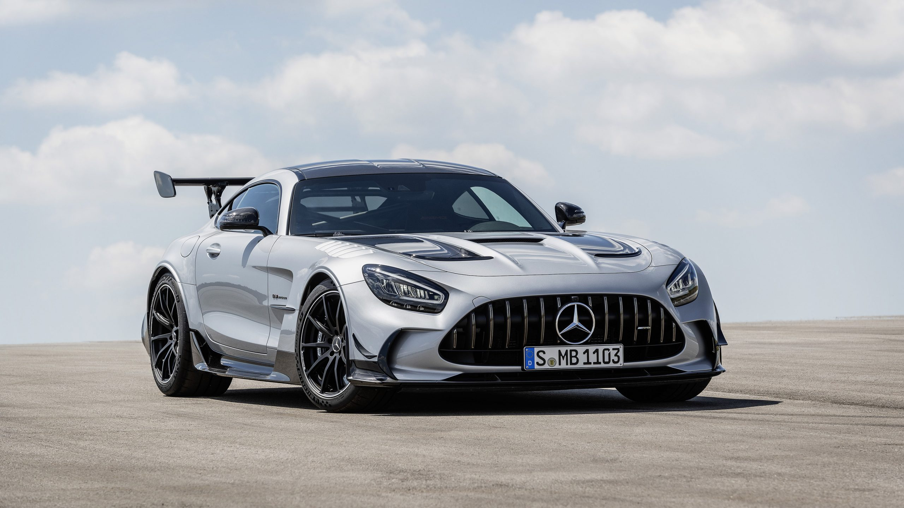

A Mercedes-Benz foi fundada em 1926 pela fusão da Daimler-Motoren-Gesellschaft e da Benz & Cie, na Alemanha.
A marca combina a tradição de Karl Benz (inventor do primeiro automóvel) com a inovação de Gottlieb Daimler.
Pioneira em tecnologias de segurança, luxo e performance, a Mercedes criou o primeiro carro de segurança moderno e revolucionou o mercado premium.
Com modelos icônicos como o Classe S, AMG GT e Classe G, a marca é sinônimo de elegância, qualidade alemã e inovação tecnológica.
Hoje, lidera o segmento de carros de luxo e está na vanguarda dos veículos elétricos com a linha EQS.
